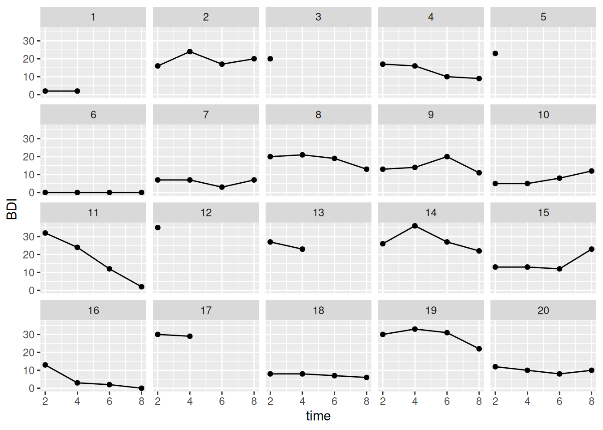
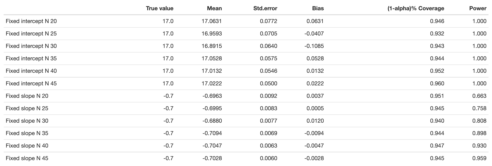

# Preparation: Install and load all necessary packages
# install.packages(c("lme4", "lmerTest", "ggplot2", "tidyr", "Rfast", "future.apply"))
library(lme4) # for estimating LMMs
library(lmerTest) # to get p-values for lme4
library(ggplot2) # for plotting
library(tidyr) # for reshaping data from wide to long
library(Rfast) # fast creation of correlated variables
library(future.apply) # for parallel processing
# plan() initializes parallel processing,
# for faster code execution
# By default, it uses all available cores
plan(multisession)Ch. 4: Linear Mixed Models / Multilevel models
Reading/working time: ~60 min.
In order to keep this chapter at a reasonable length, we focus on how to simulate the mixed effects/multi-level model and spend less time discussing how to arrive at plausible parameter values. Please read Chapters 1 and 2 for multiple examples where the parameter values are derived from (a) the literature (e.g., bias-corrected meta-analyses), (b) pilot data, or (c) plausibility constraints.
Furthermore, we’ll use the techniques described in the Chapter “Bonus: Optimizing R code for speed”, otherwise the simulations are too slow. If you wonder about the unknown commands in the code, please read the bonus chapter to learn how to considerably speed up your code!
We continue to work with the “Beat the blues” (BtheB) data set from the HSAUR R package. As there are multiple post-treatment measurements (after 2, 3, 6, and 8 months) we can create a nice longitudinal multilevel data set, with measurement points on level 1 (L1) and persons on level 2 (L2). We will work with the lme4 package to run the mixed-effect models.
For that, we first have to transform the pilot data set into the long format:
# load the data
data("BtheB", package = "HSAUR")
BtheB$person_id <- 1:nrow(BtheB)
BtheB_long <- pivot_longer(
BtheB,
cols = matches("^bdi\\.\\d"),
values_to = "BDI",
names_to = "variable"
)
BtheB_long$time <- substr(BtheB_long$variable, 5, 5) |> as.integer()Here we plot the trajectory of the first 20 participants. As you can see, there are missing values; not all participants have all follow-up values:
ggplot(
BtheB_long[BtheB_long$person_id <= 20, ],
aes(x = time, y = BDI, group = person_id)
) +
geom_point() +
geom_line() +
facet_wrap(~person_id)
A random-intercept, fixed-slope model
We start with a simple model and analyze the trajectory of the BDI score across time (we ignore the treatment factor for the moment). Hence, the question for this model is: Is there a linear trend over time in BDI scores?
The formulas
- i = index for time points
- j = index for persons
Level 1 equation: \text{BDI}_{ij} = \beta_{0j} + \beta_{1j} time_{ij} + e_{ij} Level 2 equations: \beta_{0j} = \gamma_{00} + u_{0j}\\ \beta_{1j} = \gamma_{10} Combined equation: \text{BDI}_{ij} = \gamma_{00} + \gamma_{10} time_{ij} + u_{0j} + e_{ij} \\ \\ e_{ij} \mathop{\sim}\limits^{\mathrm{iid}} N(mean=0, var=\sigma^2) \\ u_{0j} \mathop{\sim}\limits^{\mathrm{iid}} N(mean=0, var=\tau_{00})
Analysis in pilot data
First, let’s run the analysis model in the pilot data. To make the intercept more interpretable, we center it on the first post-measurement by subtracting 2 (i.e., month “2” becomes month “0” etc.).
BtheB_long$time.c <- BtheB_long$time - 2
l0 <- lmer(BDI ~ 1 + time.c + (1 | person_id), data = BtheB_long)
summary(l0)Linear mixed model fit by REML. t-tests use Satterthwaite's method [
lmerModLmerTest]
Formula: BDI ~ 1 + time.c + (1 | person_id)
Data: BtheB_long
REML criterion at convergence: 1929.4
Scaled residuals:
Min 1Q Median 3Q Max
-2.6308 -0.4698 -0.0810 0.3536 3.7142
Random effects:
Groups Name Variance Std.Dev.
person_id (Intercept) 97.15 9.857
Residual 25.48 5.048
Number of obs: 280, groups: person_id, 97
Fixed effects:
Estimate Std. Error df t value Pr(>|t|)
(Intercept) 16.9691 1.0990 110.4143 15.441 < 2e-16 ***
time.c -0.6869 0.1486 192.8764 -4.623 6.91e-06 ***
---
Signif. codes: 0 '***' 0.001 '**' 0.01 '*' 0.05 '.' 0.1 ' ' 1
Correlation of Fixed Effects:
(Intr)
time.c -0.267# Compute ICC
97.15 / (97.15 + 25.48)[1] 0.7922205Hence, in the pilot data there is a significant negative trend – with each month, participants have a decrease of 0.7 BDI points. But remember that in this data set all of the participants have been treated (with one of two treatments). For a passive control group we probably would expect no, or at least a much smaller negative trend over time. (There could be spontaneous remissions, but if this effect is assumed to be very strong, there would be no need for psychotherapy). The ICC is around 79%, hence a huge amount of random variance can be attributed to differences between persons.
The grand intercept \gamma_{00} is 17. This is also the average post-treatment value that we assumed in our previous models in Chapters 1 and 2.
For the random intercept variance and the residual variance, we take generously rounded estimates from the pilot data: \tau_{00} = 100 and \sigma^2 = 25.
TipDefault values for ICCs?
Sometimes the random intercept variance is parametrized via the ICC. Some publications discuss “typical” ICCs (see also Scherbaum & Ferreter, 2008):
- „ICC values typically range between .05 and .20“ (Snijders & Bosker, 1999; Bliese, 2000)
- „values greater than .30 will be rare“ (Bliese, 2000)
- „median value of .12; this is likely an overestimate“ (James, 1982)
- „a value between .10 and .15 will provide a conservative estimate of the ICC when it cannot be precisely computed“
But there are some research fields where ICCs > 30% are not uncommon – as you can see in our own pilot data, where the ICC was 79%! Again, defaults based on “typical values in the literature” might be better than blind guessing, but nothing beats domain knowledge.
Let’s simulate
The next script shows how to simulate multilevel data with a random intercept. We first create an L2 data set (where each row is once participant). This contains a person id (which is necessary to merge the L1 and the L2 data set) and the random intercepts (i.e., the random deviations of persons from the fixed intercept). In more complex models, this also contains all L2 predictors.
Next we create an L1 data set and then merge both into one long format data set. We closely simulate the situation of the pilot data: All participants are treated and show a negative trend.
#------ Setting the model parameters ---------------
# between-person random intercept variance: var(u_0j) = tau_00
tau_00 <- 100
gamma_00 <- 17 # the grand (fixed) intercept
gamma_10 <- -0.7 # the fixed slope for time
residual_var <- 25
n_persons <- 100
# Create an L2 (person-level) data set; each row is one person
df_L2 <- data.frame(
person_id = 1:n_persons,
u_0j = rnorm(n_persons, mean = 0, sd = sqrt(tau_00))
)
# Create an L1 (measurement-point-level) data set; each row is one measurement
df_L1 <- data.frame(
person_id = rep(1:n_persons, each = 4), # create 4 rows for each person (as we have 4 measurements)
time.c = rep(c(0, 2, 4, 6), times = n_persons)
)
# combine to a long format data set
df_long <- merge(df_L1, df_L2, by = "person_id")
# compute the DV by writing down the combined equation
df_long <- within(df_long, {
BDI <- gamma_00 +
gamma_10 * time.c +
u_0j +
rnorm(n_persons * 4, mean = 0, sd = sqrt(residual_var))
})
l1 <- lmer(BDI ~ 1 + time.c + (1 | person_id), data = df_long)
summary(l1)Linear mixed model fit by REML. t-tests use Satterthwaite's method [
lmerModLmerTest]
Formula: BDI ~ 1 + time.c + (1 | person_id)
Data: df_long
REML criterion at convergence: 2660.4
Scaled residuals:
Min 1Q Median 3Q Max
-2.65497 -0.57893 -0.00296 0.57915 2.85375
Random effects:
Groups Name Variance Std.Dev.
person_id (Intercept) 98.55 9.927
Residual 21.71 4.660
Number of obs: 400, groups: person_id, 100
Fixed effects:
Estimate Std. Error df t value Pr(>|t|)
(Intercept) 18.5281 1.0665 118.1334 17.372 < 2e-16 ***
time.c -0.4936 0.1042 299.0000 -4.738 3.35e-06 ***
---
Signif. codes: 0 '***' 0.001 '**' 0.01 '*' 0.05 '.' 0.1 ' ' 1
Correlation of Fixed Effects:
(Intr)
time.c -0.293Now we put this data generating script into a function and run our power analysis:
# Note: This code could be more optimized for speed, but this way is easier to understand
sim4 <- function(
n_persons = 100,
tau_00 = 100,
gamma_00 = 17,
gamma_10 = -0.7,
residual_var = 25,
print = FALSE
) {
df_L2 <- data.frame(
person_id = 1:n_persons,
u_0j = rnorm(n_persons, mean = 0, sd = sqrt(tau_00))
)
df_L1 <- data.frame(
person_id = rep(1:n_persons, each = 4), # create 4 rows for each person (as we have 4 measurements)
time.c = rep(c(0, 2, 4, 6), times = n_persons)
)
# combine to a long format data set
df_long <- merge(df_L1, df_L2, by = "person_id")
# simulate response variable, based on combined equation
df_long <- within(df_long, {
BDI <- gamma_00 +
gamma_10 * time.c +
u_0j +
rnorm(n_persons * 4, mean = 0, sd = sqrt(residual_var))
})
# compute p-values
# these options might speed up code execution a little bit:
# , control=lmerControl(optimizer="bobyqa", calc.derivs = FALSE)
l1 <- lmer(BDI ~ 1 + time.c + (1 | person_id), data = df_long)
if (print == TRUE) {
print(summary(l1))
} else {
return(summary(l1)$coefficients[, "Pr(>|t|)"])
}
}
set.seed(0xBEEF)
iterations <- 1000
ns <- seq(30, 50, by = 5)
result <- data.frame()
for (n_persons in ns) {
system.time({
p_values <- future_replicate(
iterations,
sim4(n_persons = n_persons),
future.seed = TRUE
)
})
result <- rbind(
result,
data.frame(
n = n_persons,
power_intercept = sum(p_values[1, ] < .005) / iterations,
power_time.c = sum(p_values[2, ] < .005) / iterations
)
)
# show the result after each run (not shown here in the tutorial)
print(result)
} n power_intercept power_time.c
1 30 1 0.700
2 35 1 0.786
3 40 1 0.874
4 45 1 0.912
5 50 1 0.937Hence, we need around 36 persons to achieve a power of 80% to detect this slope.
Comparison with other approaches
Murayama and colleagues (2022) recently released an approximate but easy approach for LMM power analysis based on pilot data. They also provide an interactive Shiny app.
Go to the tab “Level-1 predictor -> Planning L2 sample size only” and enter the values from the pilot study into the fields in the left panel:
- (Absolute) t value of the focal level-1 predictor = 4.623
- Level-2 sample size = 97
- Number of cross-level interactions related to the focal level-1 predictor = 0
This approximation yields very close values to our simulation:

Another option is the app “PowerAnalysisIL” by Lafit (2021). In that app you would need to choose “Model 4: Effect of a level-1 continuous predictor (fixed slope)” and set “Autocorrelation of level-1 errors” to zero to estimate an equivalent model to ours. This app, however, is much slower than our own simulations and cannot perfectly mirror our model, as the continuous L1 predictor cannot be defined exactly as we need it.
Nonetheless, the estimates are not far away from ours:

A random-intercept, random-slope model with cross-level interaction
We now make the model more complex by (a) adding an L2 predictor (treatment vs. control), (b) allowing random slopes for the time effect, and (c) model a cross-level interaction (i.e., does the slope differ between treatment and control group?).
The main effect for treatment reveals group differences when the other predictor, time, is zero (i.e., at the first post-treatment measurement). The main effect for time now is a conditional effect, as it models the time trend for the control group (i.e., when treatment is zero).
The formulas
- i = index for time points
- j = index for persons
Level 1 equation: \text{BDI}_{ij} = \beta_{0j} + \beta_{1j} time_{ij} + e_{ij} Level 2 equations: \beta_{0j} = \gamma_{00} + \gamma_{01} \text{treatment}_j + u_{0j}\\ \beta_{1j} = \gamma_{10} + \gamma_{11} \text{treatment}_j + u_{1j} Combined equation: \text{BDI}_{ij} = \gamma_{00} + \gamma_{01} \text{treatment}_j + \gamma_{10} time_{ij} + \gamma_{11} \text{treatment}_j time_{ij} + u_{1j} time_{ij} + u_{0j} + e_{ij} \\ \\ e_{ij} \mathop{\sim}\limits^{\mathrm{iid}} N(mean=0, var=\sigma^2) \\ u_{0j} \mathop{\sim}\limits^{\mathrm{iid}} N(mean=0, var=\tau_{00}) \\ u_{1j} \mathop{\sim}\limits^{\mathrm{iid}} N(mean=0, var=\tau_{11}) \\ cov(u_{0j}, u_{1j}) = \tau_{01}
Setting the population parameter values
We need to assume four additional population values, namely: \tau_{11} (the variance of random slopes), \tau_{01} (the intercept-slope-covariance), \gamma_{01} (the treatment main effect), and \gamma_{11} (the interaction effect).
Fixed effects:
- The grand intercept \gamma_{00} now is set to 23.
- The treatment effect \gamma_{01} is set to -6 (as before). In this more complex model, the treatment effect refers to a difference between treatment and control group directly after treatment.
- As mentioned above, it is reasonable to assume that there should be no marked trend in a passive control group. Therefore, we set the conditional main effect for time, \gamma_{10} to 0.
- For the interaction effect, we expect a steeper decline in the treatment group (e.g., because the treatment “unfolds” its effect over time). If we set the interaction effect to -0.7, this translates to a predicted slope of -0.7 in the treatment group: \gamma_{10} time_{ij} + \gamma_{11} \text{treatment}_j time_{ij} = (\gamma_{10} + \gamma_{11} \text{treatment}_j) time_{ij}.
Is this slope of -0.7, estimated from the pilot data, reasonable? Let’s extrapolate the trend: Treated patients have an average BDI score of 17 (directly after treatment). If they decline 0.7 points per month, they would have a BDI difference of 12*-0.7 = -8.4 after one year and are at around 9 BDI points. With that decline, they would have moved from a mild depression to a minimal depression. This seems plausible.
Random terms:
- Assume that ~95% of slopes in the treatment group lie between -0.7 ± 0.3 (i.e., between -0.4 and -1). This corresponds to a standard deviation of 0.15 and consequently a variance of \tau_{11} = 0.15^2 = 0.0225.
- We assume no random effect correlation, so \tau_{01} = 0.
As recommended in the last chapter, we visualize this assumed interaction effect by a hand drawing:

Looks good!
Let’s simulate
sim5 <- function(
n_persons = 100,
tau_00 = 100,
tau_11 = 0.0225,
tau_01 = 0,
gamma_00 = 23,
gamma_01 = -6,
gamma_10 = 0,
gamma_11 = -0.7,
residual_var = 25,
print = FALSE
) {
# create (correlated) random effect structure
mu <- c(0, 0)
sigma <- matrix(
c(tau_00, tau_01, tau_01, tau_11),
nrow = 2,
byrow = TRUE
)
RE <- rmvnorm(n = n_persons, mu = mu, sigma = sigma) |> data.frame()
names(RE) <- c("u_0j", "u_1j")
df_L1 <- data.frame(
person_id = 1:n_persons,
u_0j = RE$u_0j,
u_1j = RE$u_1j,
treatment = rep(c(0, 1), times = n_persons / 2)
)
df_L2 <- data.frame(
person_id = rep(1:n_persons, each = 4), # create 4 rows for each person (as we have 4 measurements)
time.c = rep(c(0, 2, 4, 6), times = n_persons)
)
# combine to a long format data set
df_long <- merge(df_L1, df_L2, by = "person_id")
# simulate response variable, based on combined equation
df_long <- within(df_long, {
BDI <- gamma_00 + # intercept
gamma_10 * time.c +
gamma_01 * treatment +
gamma_11 * time.c * treatment + # fixed terms
u_0j +
u_1j * time.c +
rnorm(n_persons * 4, mean = 0, sd = sqrt(residual_var)) # random terms
})
# for debugging: plot some simulated participants
#ggplot(df_long[df_long$person_id <=20, ], aes(x=time.c, y=BDI, color=factor(treatment), group=person_id)) +
# geom_point() + geom_line() + facet_wrap(~person_id)
# ggplot(df_long, aes(x=time.c, y=BDI, color=factor(treatment))) +
# stat_summary(fun.data=mean_cl_normal, geom = "pointrange")
# compute p-values
# these options might speed up code execution a little bit:
# , control=lmerControl(optimizer="bobyqa", calc.derivs = FALSE)
l1 <- lmer(
BDI ~ 1 + time.c * treatment + (1 + time.c | person_id),
data = df_long
)
if (print == TRUE) {
print(summary(l1))
} else {
return(summary(l1)$coefficients[, "Pr(>|t|)"])
}
}
set.seed(0xBEEF)
iterations <- 1000
ns <- seq(60, 200, by = 10) # must be dividable by 2
result <- data.frame()
for (n_persons in ns) {
system.time({
p_values <- future_replicate(
iterations,
sim5(n_persons = n_persons),
future.seed = TRUE
)
})
result <- rbind(
result,
data.frame(
n = n_persons,
power_intercept = sum(p_values[1, ] < .005) / iterations,
power_time.c = sum(p_values[2, ] < .005) / iterations,
power_treatment = sum(p_values[3, ] < .005) / iterations,
power_IA = sum(p_values[4, ] < .005) / iterations
)
)
# show the result after each run (not shown here in the tutorial)
print(result)
} n power_intercept power_time.c power_treatment power_IA
1 60 1 0.004 0.221 0.293
2 70 1 0.007 0.270 0.409
3 80 1 0.003 0.344 0.448
4 90 1 0.003 0.412 0.503
5 100 1 0.001 0.475 0.563
6 110 1 0.004 0.527 0.619
7 120 1 0.008 0.568 0.702
8 130 1 0.003 0.600 0.772
9 140 1 0.005 0.663 0.793
10 150 1 0.009 0.701 0.850
11 160 1 0.008 0.749 0.840
12 170 1 0.004 0.774 0.860
13 180 1 0.005 0.798 0.884
14 190 1 0.003 0.834 0.920
15 200 1 0.004 0.859 0.934You will see a lot of warnings about boundary (singular) fit – you can generally ignore these; they typically occur when one of the random variances is exactly zero; but the fixed effect estimates (which are our focus here) are still valid. You will also see some rare warnings about Model failed to converge with max|grad|. In this case, the optimizer did not converge with the required precision, but typically still is very close. Finally, there are some warnings Model failed to converge with 1 negative eigenvalue. These instances give wrong results. However, if in our thousands of simulations some very few models did not converge, this makes no noticeable difference. If, however, the majority of your models does not converge this is a hint that your simulation has some errors.
Concerning the computed power, we see that we need around 180 participants for the treatment main effect (which mirrors the result from Chapter 1) and around 140 participants for detecting the interaction effect. As there is no main effect for time.c (it has been simulated as zero), the power stays always around the \alpha-level.
Ways forward
While this power analysis could be approximated with existing apps, there are many useful extensions of the simulations that will not be possible in existing apps. Here are some examples:
- We know from the pilot data that there is a lot of participant drop-out. We could easily simulate that drop-out (e.g., missing completely at random, MCAR) by setting, say, 10% of all BDI values to
NAfrom t_2 on, additional 10% from t_3 on, etc. - We could simulate floor effects: Currently, the simulated BDI scores can drop below zero. A more realistic data generating model would cap these values at zero. This restricts the range, diminishes the mean difference and therefore lowers the power.
- So far, the tutorial only covered a priori power analysis, where the sample size is the target. With an existing data set, you could do, for example, a sensitivity power analysis by varying the effect size in the outer loop (and keeping sample size constant).
Other packages
The faux package offers an elegant interface to simulate multilevel data:
# install.packages("devtools")
# devtools::install_github("debruine/faux")
library(faux)
sim_faux <- function(n_persons = 100, print = FALSE) {
df <- add_random(person_id = n_persons) %>%
add_within("person_id", time.c = 0:3) %>%
add_between("person_id", group = c("treatment", "control")) %>%
add_recode("group", "condition", control = 0, treatment = 1) %>%
add_ranef("person_id", u0j = sqrt(100)) %>%
add_ranef(sigma = sqrt(25))
df$time.c <- as.integer(as.character(df$time.c)) * 2
# compute DV
df$BDI <- 17 - 0.7 * df$time.c + df$u0j + df$sigma
l1 <- lmer(BDI ~ 1 + time.c + (1 | person_id), data = df)
if (print == TRUE) {
print(summary(l1))
} else {
return(summary(l1)$coefficients[, "Pr(>|t|)"])
}
}When you plug this simulation function into our power analysis loop, you will get the same results.
References
Scherbaum, C. A., & Ferreter, J. M. (2008). Estimating Statistical Power and Required Sample Sizes for Organizational Research Using Multilevel Modeling. Organizational Research Methods, 12(2), 347–367. http://doi.org/10.1177/1094428107308906